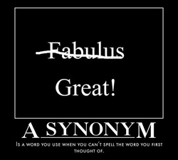

Synonym poetry is descriptive and is always made up of a couplet - two lines that rhyme. The subject or title of the poem is always a noun or adjective. The first line contains three or four synonyms of the title and the second line tells how you feel about the subject, or describes the subject a little more. Generally, each line has seven or eight syllables.
Directions: You are to write TWO synonym poems. Choose a subject (a noun or an adjective). Write that word in capital letters as your title/subject. In a thesaurus
look up the word and find eight to ten synonyms for it. Choose three to four synonyms and write them on the first line. On the second line, write how you feel about the subject or a descriptive phrase about the subject. Remember, it must rhyme with the first.
Student Examples:LOVEAttachment, adoration, warmth, adore
Love is so pure, right down to the core.
---Keira Knightley (Grade 8)
NOISEClamor, uproar, hullabaloo.
These things can really annoy you.
---Matt Damon (Grade 9)
FastSwift, speedy, fleet or quick
Go too fast and you’ll make me sick.
---Natalie Portman (Grade 7)
RancidSour, musty, putrid, rotten
This old trash won’t be forgotten.
---Claire Danes (Grade 8)